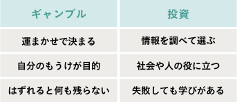
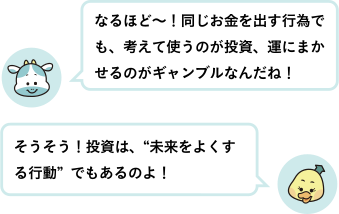

● ギャンブルとは？
Aさん「このまえ100円のくじ引きやったんだ！当たればおもちゃがもらえるやつ。5回やったら、最後のひとつがあたりだったんだ！ラッキ〜」
これは、まさにギャンブルに近い考え方です。
お金を出して、何が起こるかは「運しだい」。 どんなに考えても、結果は変えられないというところがポイントです。
● 投資とは？
これは、まさにギャンブルに近い考え方です。
お金を出して、何が起こるかは「運しだい」。 どんなに考えても、結果は変えられないというところがポイントです。
● 投資とは？
Bさん「わたし、このまえ“レモネード屋さんごっこ”をしたの！100円で材料を買って、ポスターを作って、冷たいレモネードを出して…
通りかかった人に声をかけたら、150円もうかったよ！」
これは、投資に近い考え方です。
「どんな材料を買う？」「どうやって売る？」と ちゃんと考えて行動したからこそ、うまくいったのです。
まとめるとこのようになります。

これは、投資に近い考え方です。
「どんな材料を買う？」「どうやって売る？」と ちゃんと考えて行動したからこそ、うまくいったのです。
まとめるとこのようになります。
● 投資は、未来をよくするためのお金の使い方
たとえば、ゲーム会社の株を買うとき。 「この会社は人気のゲームを出している」 「ユーザーの評価が高い」「新作の発表が近い」 そんなふうに、よく調べて考えてから買うのが投資家の行動です。
一方、「とにかく上がりそうだから買ってみた！」 というのは、ギャンブルに近い行動です。
投資は「考える・調べる・応援する」こと 投資とは、「社会をよくするチャンスをつくるお金の使い方」です。
お店を広げる、商品を作る、誰かの夢をかなえるそういう活動を応援するのが、投資なんです。
たとえば、ゲーム会社の株を買うとき。 「この会社は人気のゲームを出している」 「ユーザーの評価が高い」「新作の発表が近い」 そんなふうに、よく調べて考えてから買うのが投資家の行動です。
一方、「とにかく上がりそうだから買ってみた！」 というのは、ギャンブルに近い行動です。
投資は「考える・調べる・応援する」こと 投資とは、「社会をよくするチャンスをつくるお金の使い方」です。
お店を広げる、商品を作る、誰かの夢をかなえるそういう活動を応援するのが、投資なんです。
もちろん、投資にも「うまくいかないこと」はあります。
でもそのとき、「どうしてかな？」「次はどうしよう？」と考えられるのが、
ギャンブルとのいちばんのちがいです。
